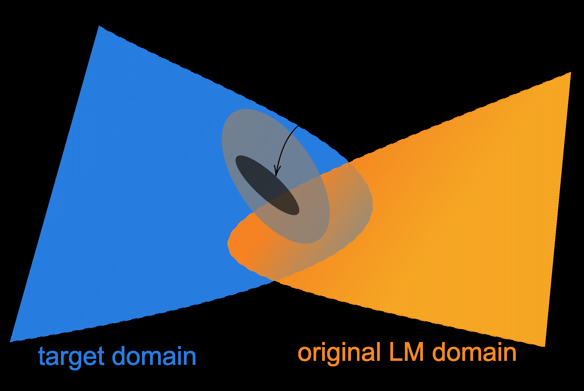
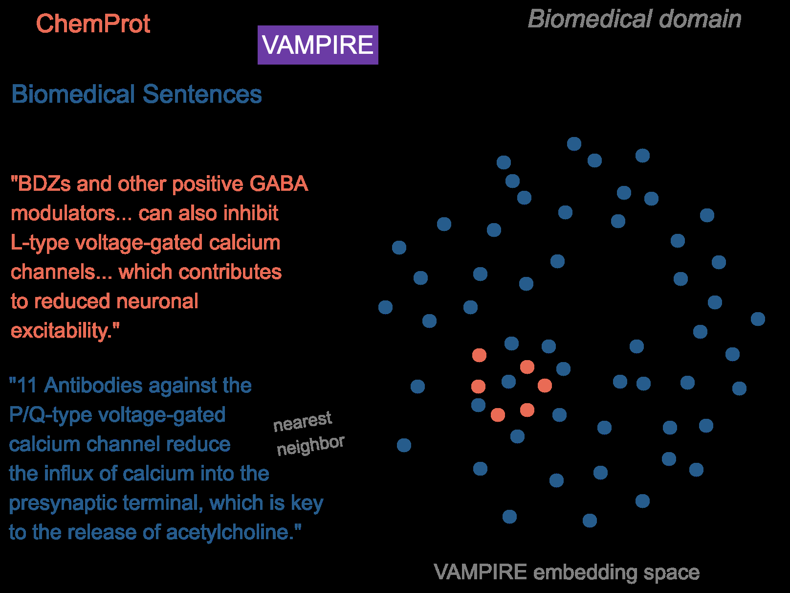

一句话总结:在已经很强的 RoBERTa 上,再做"领域自适应预训练"(DAPT,在领域无标语料上继续 MLM)与"任务自适应预训练"(TAPT,在任务自己的无标语料上继续 MLM),在 4 个领域 × 8 个分类任务上一致提升;两者互补、可叠加为 RoBERTa → DAPT → TAPT;且 TAPT 的算力远小于完整训练(单任务约为 DAPT 的 1/60),为今日的"继续预训练 / CPT"立了实证基线。
🎯 面试考点(高频):
DAPT + TAPT)效果最好。
① 图说明:论文 Figure 1——两个圆锥(蓝色 target domain、橙色 original LM domain)的交叠示意。中间深色小椭圆是可观察的 task 分布(task 数据来自这里),它非随机地从更大的"目标领域"采样;而目标领域不一定是 RoBERTa 预训练所覆盖的领域之一,但存在交集。
② 关键数据 / 对照:本文 Table 1 的 RoBERTa MLM loss 给出了"目标域与 RoBERTa 域的距离"的量化:BIOMED 1.32、CS 1.63、REVIEWS 2.10、NEWS 1.08,与 RoBERTa-PT 1.19 比,NEWS/REVIEWS 近、CS/BIOMED 远——恰好对应后续 DAPT 增益的大小排序。Figure 2 的词表重叠矩阵进一步佐证:PT-NEWS 54%、PT-REVIEWS 35%、PT-CS 27%、PT-BIOMED 19%。
③ 启示:这张图把全文的两个继续预训练范式画在了同一空间——DAPT 是把模型从橙色域往蓝色域整体搬,TAPT 是直接对准中央那个小椭圆。它解释了为什么 DAPT 在偏远域(BIOMED/CS)收益更大、为什么 TAPT 在所有 8 个任务上都有效但不能跨任务迁移(同域不同任务对应不同的小椭圆),也为 §5 用 VAMPIRE-kNN 从 domain 里捞 task-邻居提供直观依据。

① 图说明:论文 Figure 3——kNN-TAPT 的工作示意。左侧两句红色的 CHEMPROT(任务)句子和右侧 1M 蓝色 BIOMED(领域)句子,都被同一个轻量 BoW 主题模型 VAMPIRE 投影到共享向量空间;对每条任务句子做 k-近邻检索(图中红点紧邻的几颗蓝点),把这些"领域里最像任务"的句子合并进 TAPT 语料继续预训练。
② 关键数据 / 对照:Table 8 显示 ACL-ARC 上 50NN-TAPT 70.7 / 150NN-TAPT 73.3 / 500NN-TAPT 75.5,几乎追平 DAPT 75.4,而成本远低(Table 9:DAPT 12.5K 步 / 25M docs / 47GB;500NN-TAPT 9.0K 步 / 185K docs / 24MB)。RAND-TAPT(同 50 个随机邻居)显著弱于 50NN-TAPT,说明是邻居相似度而非数据量带来收益。
③ 启示:这是 2020 年版的"基于嵌入相似度的预训练数据选择",直接孕育了今日 DSIR、QuRating、DataComp-LM 等系列工作。两个工程要点:(i) 嵌入器必须够轻才能跑 1M 句子(选 VAMPIRE 而非 BERT);(ii) 用 FAISS flat index + cosine 相似度,k 越大越逼近 DAPT 但开销也变大——选择 k 是 task-relevance 与 diversity 的权衡。
Don't Stop Pretraining: Adapt Language Models to Domains and Tasks. Suchin Gururangan, Ana Marasović, Swabha Swayamdipta, Kyle Lo, Iz Beltagy, Doug Downey, Noah A. Smith. Allen Institute for Artificial Intelligence; Paul G. Allen School of CSE, University of Washington.
Language models pretrained on text from a wide variety of sources form the foundation of today's NLP. In light of the success of these broad-coverage models, we investigate whether it is still helpful to tailor a pretrained model to the domain of a target task. We present a study across four domains (biomedical and computer science publications, news, and reviews) and eight classification tasks, showing that a second phase of pretraining in-domain (domain-adaptive pretraining) leads to performance gains, under both high- and low-resource settings. Moreover, adapting to the task's unlabeled data (task-adaptive pretraining) improves performance even after domain-adaptive pretraining. Finally, we show that adapting to a task corpus augmented using simple data selection strategies is an effective alternative, especially when resources for domain-adaptive pretraining might be unavailable. Overall, we consistently find that multi-phase adaptive pretraining offers large gains in task performance.
在多种来源文本上预训练得到的语言模型,构成了今日 NLP 的基础。鉴于这些广覆盖模型的成功,我们研究的问题是:是否还有必要把一个已预训练好的模型针对目标任务的领域做定制?我们在四个领域(生物医学论文、计算机科学论文、新闻、评论)与八个分类任务上做了一项研究,结果表明:在领域内做"第二阶段预训练"(即领域自适应预训练,DAPT)在高资源与低资源设定下都能带来性能提升。此外,在任务自身的无标数据上做自适应(任务自适应预训练,TAPT)即使在 DAPT 之后仍能继续改进性能。最后,我们表明:通过简单的数据选择策略对任务语料进行扩充,再做自适应,是一种有效的替代方案——尤其当无法负担 DAPT 所需资源时。总的来说,我们一致地发现:多阶段自适应预训练能为下游任务性能带来很大的提升。
Today's pretrained language models are trained on massive, heterogeneous corpora. For instance, RoBERTa was trained on over 160GB of uncompressed text, with sources ranging from English-language encyclopedic and news articles, to literary works and web content. Representations learned by such models achieve strong performance across many tasks with datasets of varying sizes drawn from a variety of sources. This leads us to ask whether a task's textual domain—a term typically used to denote a distribution over language characterizing a given topic or genre (such as "science" or "mystery novels")—is still relevant. Do the latest large pretrained models work universally, or is it still helpful to build separate pretrained models for specific domains?
今天的预训练语言模型都是在海量、异构的语料上训练的。例如,RoBERTa 在超过 160GB 未压缩文本上训练,来源跨度从英文百科与新闻文章,到文学作品与网页内容。由这类模型学到的表示,在各种来源、各种规模数据集的众多任务上都取得了强表现。这就引出一个问题:任务的文本领域(domain,通常用来指刻画某一话题或体裁——例如"科学"或"侦探小说"——的语言分布)是否仍然相关?最新的大型预训练模型是否能普适工作,还是说为特定领域单独构建预训练模型仍有意义?
While some studies have shown the benefit of continued pretraining on domain-specific unlabeled data, these studies only consider a single domain at a time and use a language model that is pretrained on a smaller and less diverse corpus than the most recent language models. Moreover, it is not known how the benefit of continued pretraining may vary with factors like the amount of available labeled task data, or the proximity of the target domain to the original pretraining corpus (see Figure 1). We address this question for one such high-performing model, RoBERTa. We consider four domains (biomedical and computer science publications, news, and reviews) and eight classification tasks (two in each domain). For targets that are not already in-domain for RoBERTa, our experiments show that continued pretraining on the domain (which we refer to as domain-adaptive pretraining or DAPT) consistently improves performance on tasks from the target domain, in both high- and low-resource settings.
虽然已有一些研究展示了"在某个领域无标语料上继续预训练"的收益,但这些工作每次只考虑一个领域,且所用语言模型的预训练语料比当今最新模型更小、更不多样。此外,继续预训练的收益如何随"可用的有标任务数据量"或"目标领域与原预训练语料的相近程度"等因素变化,目前并不清楚(见 Figure 1)。我们针对一个高性能模型 RoBERTa 来回答这一问题。我们考虑四个领域(生物医学论文与计算机科学论文、新闻、评论)与八个分类任务(每个领域两个)。对于那些不属于 RoBERTa 原域的目标,我们的实验表明:在该领域上继续预训练(我们称之为领域自适应预训练,DAPT)在高资源与低资源设定下,都能一致地提升目标领域任务的性能。
Above, we consider domains defined around genres and forums, but it is also possible to induce a domain from a given corpus used for a task, such as the one used in supervised training of a model. This raises the question of whether pretraining on a corpus more directly tied to the task can further improve performance. We study how domain-adaptive pretraining compares to task-adaptive pretraining, or TAPT, on a smaller but directly task-relevant corpus: the unlabeled task dataset, drawn from the task distribution. Task-adaptive pretraining has been shown effective, but is not typically used with the most recent models. We find that TAPT provides a large performance boost for RoBERTa, with or without domain-adaptive pretraining.
上面我们把领域定义在"体裁与论坛"的粒度,但其实也可以从某个任务所用的语料(例如监督训练所用的数据)里诱导出一个领域。这就引出一个问题:在与任务联系更直接的语料上做预训练,能否进一步提升性能?我们研究 DAPT 与任务自适应预训练(TAPT)的对比——TAPT 在更小但与任务直接相关的语料上做:即从任务分布中得到的无标任务数据集。TAPT 已被证明有效,但与最新的预训练模型搭配使用得并不多。我们发现:无论是否做过 DAPT,TAPT 都能给 RoBERTa 带来很大的性能提升。
Finally, we show that the benefits from task-adaptive pretraining increase when we have additional unlabeled data from the task distribution that has been manually curated by task designers or annotators. Inspired by this success, we propose ways to automatically select additional task-relevant unlabeled text, and show how this improves performance in certain low-resource cases. On all tasks, our results using adaptive pretraining techniques are competitive with the state of the art. In summary, our contributions include: (i) a thorough analysis of domain- and task-adaptive pretraining across four domains and eight tasks, spanning low- and high-resource settings; (ii) an investigation into the transferability of adapted LMs across domains and tasks; and (iii) a study highlighting the importance of pretraining on human-curated datasets, and a simple data selection strategy to automatically approach this performance.
最后,我们表明:如果有额外的、由任务设计者或标注者人工精挑的任务分布无标数据,TAPT 的收益会更大。受此启发,我们提出几种自动选择"任务相关无标文本"的方法,并展示其在某些低资源场景下的性能提升。在所有任务上,我们用自适应预训练技术得到的结果都与当时的 SOTA 具有竞争力。贡献概括为:(i) 在四个领域、八个任务、低/高资源设定下,对 DAPT 与 TAPT 做了全面分析;(ii) 研究了"自适应后的 LM"在跨域跨任务上的可迁移性;(iii) 强调了"人工精挑数据集"对预训练的重要性,并给出一种简单的数据选择策略来自动逼近该效果。
§2 Background: Pretraining. Learning for most NLP research systems since 2018 consists of training in two stages. First, a neural language model (LM), often with millions of parameters, is trained on large unlabeled corpora. The word (or wordpiece) representations learned in the pretrained model are then reused in supervised training for a downstream task, with optional updates (fine-tuning) of the representations and network from the first stage. One such pretrained LM is RoBERTa, which uses the same transformer-based architecture as its predecessor BERT. It is trained with a masked language modeling objective (i.e., cross-entropy loss on predicting randomly masked tokens). The unlabeled pretraining corpus for RoBERTa contains over 160 GB of uncompressed raw text from different English-language corpora. RoBERTa attains better performance on an assortment of tasks than its predecessors, making it our baseline of choice.
§2 背景:预训练。自 2018 年以来,大多数 NLP 研究系统的学习都分两阶段。第一阶段,一个参数量动辄上百万的神经语言模型(LM)在大规模无标语料上训练;第二阶段,预训练模型学到的词(或 wordpiece)表示被用于下游任务的监督训练,第一阶段的表示与网络可以选择性地微调。RoBERTa 就是这样一个预训练 LM——它与前身 BERT 共用相同的 transformer 架构,以掩码语言建模为目标训练(即交叉熵损失:$\mathcal{L}_{\text{MLM}} = -\mathbb{E}\bigl[\log p_\theta(x_{\text{mask}}\mid x_{\backslash\text{mask}})\bigr]$),预测随机被掩盖的 token。RoBERTa 的无标预训练语料含超过 160 GB 未压缩原始文本,来自多个英文语料库。它在一系列任务上比前辈更强,因此我们选其作基线。
Although RoBERTa's pretraining corpus is derived from multiple sources, it has not yet been established if these sources are diverse enough to generalize to most of the variation in the English language. In other words, we would like to understand what is out of RoBERTa's domain. Towards this end, we explore further adaptation by continued pretraining of this large LM into two categories of unlabeled data: (i) large corpora of domain-specific text, and (ii) available unlabeled data associated with a given task.
尽管 RoBERTa 的预训练语料来自多个来源,但这些来源是否足够多样到能泛化到英语的大部分变体,目前并未确证。换句话说,我们想搞清楚:什么不在 RoBERTa 的域里?为此,我们通过对这个大型 LM 做继续预训练,探索两类无标数据上的进一步自适应:(i) 大规模的领域专属文本语料;(ii) 与某个任务相关、现成可得的无标数据。
Our approach to domain-adaptive pretraining (DAPT) is straightforward—we continue pretraining RoBERTa on a large corpus of unlabeled domain-specific text. The four domains we focus on are biomedical (BIOMED) papers, computer science (CS) papers, news text from REALNEWS, and AMAZON reviews. We choose these domains because they have been popular in previous work, and datasets for text classification are available in each. Table 1 lists the specifics of the unlabeled datasets in all four domains (BIOMED 7.55B tokens / 47GB; CS 8.10B / 48GB; NEWS 6.66B / 39GB; REVIEWS 2.11B / 11GB), as well as RoBERTa's training corpus (~160GB).
我们的领域自适应预训练(DAPT)方法很直接——我们在大规模的领域专属无标文本上继续预训练 RoBERTa。我们聚焦四个领域:生物医学(BIOMED)论文、计算机科学(CS)论文、来自 REALNEWS 的新闻文本、AMAZON 评论。选这些领域是因为它们在以往工作中被广泛使用,而且每个领域都有可用的文本分类数据集。Table 1 列出了四个领域无标数据集的细节(BIOMED 75.5 亿 token / 47GB;CS 81.0 亿 / 48GB;NEWS 66.6 亿 / 39GB;REVIEWS 21.1 亿 / 11GB),以及 RoBERTa 自身的训练语料(约 160GB)。
3.1 Analyzing Domain Similarity. Before performing DAPT, we attempt to quantify the similarity of the target domain to RoBERTa's pretraining domain. We consider domain vocabularies containing the top 10K most frequent unigrams (excluding stopwords) in comparably sized random samples of held-out documents in each domain's corpus. We also sample 50K documents from sources similar to RoBERTa's pretraining corpus (i.e., BOOKCORPUS, STORIES, WIKIPEDIA, and REALNEWS) to construct the pretraining domain vocabulary, since the original pretraining corpus is not released. Figure 2 shows the vocabulary overlap across these samples. We observe that RoBERTa's pretraining domain has strong vocabulary overlap with NEWS (54%) and REVIEWS (35%), while CS (27%) and BIOMED (19%) are far more dissimilar. This simple analysis suggests the degree of benefit to be expected by adaptation of RoBERTa to different domains—the more dissimilar the domain, the higher the potential for DAPT.
3.1 领域相似度分析。在做 DAPT 之前,我们尝试量化目标领域与 RoBERTa 预训练域的相似度。我们对每个领域语料,从大小可比较的留出文档随机样本中,取前 10K 个高频 unigram(去停用词)作为该领域的词表。由于原预训练语料未公开,我们也从与 RoBERTa 预训练语料相似的来源(即 BOOKCORPUS、STORIES、WIKIPEDIA、REALNEWS)中采样 50K 文档,以构造"预训练领域词表"。Figure 2 展示了样本之间的词表重叠。我们观察到:RoBERTa 的预训练域与 NEWS(54%)、REVIEWS(35%)有较强的词表重叠,而 CS(27%)、BIOMED(19%)则更为疏远。这个简单分析提示了 RoBERTa 自适应到不同领域时可期待的收益——领域越疏远,DAPT 的潜在收益越大。
3.2 Experiments. Our LM adaptation follows the settings prescribed for training RoBERTa. We train RoBERTa on each domain for 12.5K steps, which amounts to a single pass on each domain dataset, on a v3-8 TPU. This second phase of pretraining results in four domain-adapted LMs, one for each domain. We present the masked LM loss of RoBERTa on each domain before and after DAPT in Table 1: $\mathcal{L}_{\text{ROB.}}$ vs $\mathcal{L}_{\text{DAPT}}$ — BIOMED 1.32 → 0.99, CS 1.63 → 1.34, NEWS 1.08 → 1.16, REVIEWS 2.10 → 1.93. We observe that masked LM loss decreases in all domains except NEWS after DAPT, where we observe a marginal increase. Under each domain, we consider two text classification tasks. Our tasks represent both high- and low-resource ($\le 5$K labeled training examples, and no additional unlabeled data) settings. As our baseline, we use an off-the-shelf RoBERTa-base model and perform supervised fine-tuning of its parameters for each classification task; following standard practice we pass the final-layer [CLS] token representation to a task-specific feedforward layer for prediction.
3.2 实验设置。我们的 LM 自适应沿用 RoBERTa 训练所规定的设置。我们在每个领域上将 RoBERTa 训练 12.5K 步——大致相当于在该领域数据集上跑一个 epoch,使用一块 v3-8 TPU。第二阶段预训练得到四个领域自适应 LM,每个领域一个。Table 1 报告了 RoBERTa 在每个领域上 DAPT 前后的 MLM 损失 $\mathcal{L}_{\text{ROB.}}$ vs $\mathcal{L}_{\text{DAPT}}$:BIOMED 1.32 → 0.99,CS 1.63 → 1.34,NEWS 1.08 → 1.16,REVIEWS 2.10 → 1.93。可以看到,除了 NEWS(略增),DAPT 在所有领域都让 MLM 损失下降。每个领域下我们考虑两个文本分类任务,涵盖高资源和低资源($\le 5$K 个有标训练样本且无额外无标数据)设置。作为基线,我们使用现成的 RoBERTa-base 并对其参数做监督微调;按标准做法,把最后一层 [CLS] token 表示送入一个任务特定的前馈层做预测。
Results. Test results are shown under the DAPT column of Table 3. We observe that DAPT improves over RoBERTa in all domains. For BIOMED, CS, and REVIEWS, we see consistent improvements over RoBERTa, demonstrating the benefit of DAPT when the target domain is more distant from RoBERTa's source domain. The pattern is consistent across high- and low-resource settings. Although DAPT does not increase performance on AGNEWS, the benefit we observe in HYPERPARTISAN (86.6 → 88.2) suggests that DAPT may be useful even for tasks that align more closely with RoBERTa's source domain. Notable jumps: ACL-ARC 63.0 → 75.4 (+12.4), SCIERC 77.3 → 80.8, CHEMPROT 81.9 → 84.2.
结果。测试结果见 Table 3 的 DAPT 列。我们观察到:DAPT 在所有领域上都优于 RoBERTa。对 BIOMED、CS、REVIEWS,DAPT 都有一致提升,表明当目标领域离 RoBERTa 源域越远,DAPT 的收益越大。这一规律在高资源和低资源设定下都成立。尽管 DAPT 在 AGNEWS 上没有提升,但 HYPERPARTISAN(86.6 → 88.2)的提升说明:即使任务更贴近 RoBERTa 源域,DAPT 也可能有用。最显著的提升:ACL-ARC 63.0 → 75.4(+12.4),SCIERC 77.3 → 80.8,CHEMPROT 81.9 → 84.2。
3.3 Domain Relevance for DAPT. Additionally, we compare DAPT against a setting where for each task, we adapt the LM to a domain outside the domain of interest (¬DAPT). This controls for the case in which the improvements over RoBERTa might be attributed simply to exposure to more data, regardless of the domain. For each task, DAPT significantly outperforms adapting to an irrelevant domain, suggesting the importance of pretraining on domain-relevant data. Furthermore, we generally observe that ¬DAPT results in worse performance than even RoBERTa on end-tasks. Taken together, these results indicate that in most settings, exposure to more data without considering domain relevance is detrimental to end-task performance. However, there are two tasks (SCIERC and ACL-ARC) in which ¬DAPT marginally improves performance over RoBERTa, suggesting that in some cases, continued pretraining on any additional data is useful, as noted in Baevski et al. (2019).
3.3 DAPT 的领域相关性。此外,我们把 DAPT 与一个对照设定做比较——对每个任务,把 LM 自适应到一个与目标无关的领域(称为 ¬DAPT)。这个对照排除了"提升仅是因为见到了更多数据(无关领域也行)"的可能。对每个任务,DAPT 都显著胜过自适应到无关领域,说明在领域相关数据上做预训练很重要。此外,我们普遍观察到 ¬DAPT 的下游表现甚至比 RoBERTa 还差。这些结果共同表明:大多数情况下,只看数据量、不看领域相关性是有害的。然而有两个任务(SCIERC 和 ACL-ARC)上 ¬DAPT 居然小幅胜过 RoBERTa——这暗示某些场景下,继续预训练任何额外数据都有点用,与 Baevski 等(2019)的发现一致。
3.4 Domain Overlap. Our analysis of DAPT is based on prior intuitions about how task data is assigned to specific domains. For instance, to perform DAPT for HELPFULNESS, we only adapt to AMAZON reviews, but not to any REALNEWS articles. However, the gradations in Figure 2 suggest that the boundaries between domains are in some sense fuzzy; for example, 40% of unigrams are shared between REVIEWS and NEWS. As further indication of this overlap, we qualitatively identify documents that overlap cross-domain: in Table 4 we showcase reviews and REALNEWS articles that are similar to these reviews. In fact, we find that adapting RoBERTa to NEWS is not as harmful to its performance on REVIEWS tasks (DAPT on NEWS achieves 65.5 on HELPFULNESS and 95.0 on IMDB). Although this analysis is by no means comprehensive, it indicates that the factors giving rise to observable domain differences are likely not mutually exclusive. It is possible that pretraining beyond conventional domain boundaries could result in more effective DAPT; we leave this to future work.
3.4 领域重叠。我们对 DAPT 的分析,建立在"任务数据归属于特定领域"的先验直觉上。例如,为做 HELPFULNESS 的 DAPT,我们只用 AMAZON 评论,而不用任何 REALNEWS 文章。然而 Figure 2 的渐变提示我们:领域边界在某种意义上是模糊的——例如 REVIEWS 与 NEWS 之间有 40% 的 unigram 共享。作为重叠的进一步佐证,我们也定性地识别出跨域相似的文档:Table 4 展示了与某些评论相似的 REALNEWS 文章。事实上,我们发现把 RoBERTa 自适应到 NEWS 对其在 REVIEWS 任务上的性能并没有那么伤(NEWS-DAPT 在 HELPFULNESS 上取得 65.5,在 IMDB 上 95.0)。虽然这一分析远非全面,但它提示:导致可观察领域差异的因素可能并不互斥。突破传统领域边界来做预训练或许能得到更高效的 DAPT,我们把这留给未来工作。
Datasets curated to capture specific tasks of interest tend to cover only a subset of the text available within the broader domain. For example, the CHEMPROT dataset for extracting relations between chemicals and proteins focuses on abstracts of recently-published, high-impact articles from hand-selected PubMed categories. We hypothesize that in such cases where the task data is a narrowly-defined subset of the broader domain, pretraining on the task dataset itself, or data relevant to the task, may be helpful. Task-adaptive pretraining (TAPT) refers to pretraining on the unlabeled training set for a given task; prior work has shown its effectiveness. Compared to domain-adaptive pretraining (DAPT), the task-adaptive approach strikes a different trade-off: it uses a far smaller pretraining corpus, but one that is much more task-relevant (under the assumption that the training set represents aspects of the task well). This makes TAPT much less expensive to run than DAPT, and as we show in our experiments, the performance of TAPT is often competitive with that of DAPT.
那些为捕捉某个具体任务而精心整理的数据集,通常只覆盖更广领域文本中的一个子集。例如,用于抽取"化学物-蛋白质关系"的 CHEMPROT 数据集就专注于"从手工挑选的 PubMed 类目中近期发表的高影响因子论文摘要"。我们的假设是:当任务数据是更广领域中一个狭窄子集时,直接在任务数据集本身、或与任务相关的数据上做预训练,可能有帮助。任务自适应预训练(TAPT)指的是在某个任务的无标训练集上做预训练;以往工作已表明这是有效的。与 DAPT 相比,TAPT 走的是另一种权衡:它用远小的预训练语料,但这个语料与任务更相关(前提是训练集能很好地体现任务的方方面面)。这让 TAPT 比 DAPT 便宜得多,而我们的实验也将表明:TAPT 的性能往往可以与 DAPT 媲美。
4.1 Experiments. Similar to DAPT, task-adaptive pretraining consists of a second phase of pretraining RoBERTa, but only on the available task-specific training data. In contrast to DAPT, which we train for 12.5K steps, we perform TAPT for 100 epochs. We artificially augment each dataset by randomly masking different words (using the masking probability of 0.15) across epochs. As in our DAPT experiments, we pass the final-layer [CLS] token representation to a task-specific feedforward layer for classification.
4.1 实验。与 DAPT 类似,TAPT 也是对 RoBERTa 做一次第二阶段预训练,只不过只用该任务可获得的任务专属训练数据。与 DAPT 训练 12.5K 步不同,我们让 TAPT 跑 100 个 epoch;并通过跨 epoch 随机重新 mask 不同 token(mask 概率 0.15)对每个数据集做"人工增广"。与 DAPT 实验一样,我们把最后一层 [CLS] token 表示送入任务特定的前馈层做分类。
Results. Our results are shown in the TAPT column of Table 5. TAPT consistently improves the RoBERTa baseline for all tasks across domains. Even on the news domain, which was part of RoBERTa's pretraining corpus, TAPT improves over RoBERTa, showcasing the advantage of task adaptation. Particularly remarkable are the relative differences between TAPT and DAPT. DAPT is more resource intensive (see Table 9), but TAPT manages to match its performance in some of the tasks, such as SCIERC. In RCT, HYPERPARTISAN, AGNEWS, HELPFULNESS, and IMDB, the results even exceed those of DAPT, highlighting the efficacy of this cheaper adaptation technique. Selected numbers (RoBERTa / TAPT): HYPERPARTISAN 86.6 → 90.4, AGNEWS 93.9 → 94.5, HELPFULNESS 65.1 → 68.5, IMDB 95.0 → 95.5.
结果。结果见 Table 5 的 TAPT 列。TAPT 在所有 8 个任务上都一致地提升了 RoBERTa 基线。即使在 NEWS 这种本属于 RoBERTa 预训练语料的领域,TAPT 也能给出提升,凸显了"任务自适应"的优势。尤其值得注意的是 TAPT 与 DAPT 的相对差异:DAPT 资源消耗更大(见 Table 9),但 TAPT 在某些任务(如 SCIERC)上能达到与 DAPT 相当的水平;在 RCT、HYPERPARTISAN、AGNEWS、HELPFULNESS、IMDB 上,TAPT 的结果甚至超过 DAPT——突显了这种更便宜的自适应方式的有效性。关键数字(RoBERTa / TAPT):HYPERPARTISAN 86.6 → 90.4,AGNEWS 93.9 → 94.5,HELPFULNESS 65.1 → 68.5,IMDB 95.0 → 95.5。
Combined DAPT and TAPT. We investigate the effect of using both adaptation techniques together. We begin with RoBERTa and apply DAPT then TAPT under this setting. The three phases of pretraining add up to make this the most computationally expensive of all our settings. As expected, combined domain- and task-adaptive pretraining achieves the best performance on all tasks (Table 5; e.g., ACL-ARC 75.6, SCIERC 81.3, HYPERPARTISAN 90.0, AGNEWS 94.6). Overall, our results show that DAPT followed by TAPT achieves the best of both worlds of domain and task awareness, yielding the best performance. While we speculate that TAPT followed by DAPT would be susceptible to catastrophic forgetting of the task-relevant corpus, alternate methods of combining the procedures may result in better downstream performance. Future work may explore pretraining with a more sophisticated curriculum of domain and task distributions.
DAPT 与 TAPT 的组合。我们研究两种自适应技术合用的效果。在这个设定下,我们从 RoBERTa 出发,先做 DAPT,再做 TAPT。三阶段预训练加起来,使其成为我们所有设定中计算开销最高的方案。如预期,域 + 任务自适应组合在所有任务上都取得了最佳成绩(Table 5;例如 ACL-ARC 75.6、SCIERC 81.3、HYPERPARTISAN 90.0、AGNEWS 94.6)。整体来看,"先 DAPT、后 TAPT"兼得"领域感知"与"任务感知"两个好处,得到最佳性能。我们推测,如果顺序是"先 TAPT、再 DAPT",任务相关语料可能会遭遇灾难性遗忘;其它组合方式或许能给出更好的下游性能。未来工作可探索"以领域与任务分布为课程"的、更复杂的预训练策略。
Cross-Task Transfer. We complete the comparison between DAPT and TAPT by exploring whether adapting to one task transfers to other tasks in the same domain. For instance, we further pretrain the LM using the RCT unlabeled data, fine-tune it with the CHEMPROT labeled data, and observe the effect. We refer to this setting as Transfer-TAPT. Our results for tasks in all four domains are shown in Table 6. We see that TAPT optimizes for single-task performance, to the detriment of cross-task transfer (e.g., CHEMPROT 82.6 → 80.4 / ↓2.2; HYPERPARTISAN 89.9 → 82.2 / ↓7.7; ACL-ARC 67.4 → 64.1 / ↓3.3; HELPFULNESS 68.5 → 65.0 / ↓3.5). These results demonstrate that data distributions of tasks within a given domain might differ. Further, this could also explain why adapting only to a broad domain is not sufficient, and why TAPT after DAPT is effective.
跨任务迁移。为完整比较 DAPT 与 TAPT,我们考察:在某个任务上自适应得到的模型,能否迁移到同一领域的其它任务?例如,我们用 RCT 的无标数据继续预训练 LM,然后用 CHEMPROT 的有标数据做微调。我们把这种设定称为 Transfer-TAPT。Table 6 给出了四个领域上的结果。可以看出:TAPT 只为单任务优化,代价是跨任务迁移会变差(例如 CHEMPROT 82.6 → 80.4 / ↓2.2;HYPERPARTISAN 89.9 → 82.2 / ↓7.7;ACL-ARC 67.4 → 64.1 / ↓3.3;HELPFULNESS 68.5 → 65.0 / ↓3.5)。这表明:同一领域内不同任务的数据分布也可能不同。这也进一步解释了:为什么只在"宽泛领域"上自适应是不够的,以及为什么"先 DAPT、再 TAPT"会有效。
In §4, we continued pretraining the LM for task adaptation using only the training data for a supervised task. Inspired by the success of TAPT, we next investigate another setting where a larger pool of unlabeled data from the task distribution exists, typically curated by humans. We explore two scenarios: first, for three tasks (RCT, HYPERPARTISAN, and IMDB) we use this larger pool of unlabeled data from an available human-curated corpus (§5.1). Next, we explore retrieving related unlabeled data for TAPT, from a large unlabeled in-domain corpus, for tasks where extra human-curated data is unavailable (§5.2).
在 §4 里,我们做任务自适应时只用该任务的(监督)训练集本身。受 TAPT 的成功启发,我们接下来考察另一种设定:存在更大的、来自任务分布的无标语料池,通常由人工整理。我们探索两种场景:首先,对三个任务(RCT、HYPERPARTISAN、IMDB),使用已有的人工整理(curated)语料池作为更大的无标数据(§5.1);其次,对那些没有额外人工 curated 数据的任务,我们从大规模无标领域语料里检索与任务相关的无标数据来做 TAPT(§5.2)。
5.1 Human Curated-TAPT. Dataset creation often involves collection of a large unlabeled corpus from known sources. This corpus is then downsampled to collect annotations, based on the annotation budget. The larger unlabeled corpus is thus expected to have a similar distribution to the task's training data, and it is usually available. We simulate a low-resource setting RCT-500 by downsampling the training data of the RCT dataset to 500 examples (out of 180K available), and treat the rest of the training data as unlabeled. The HYPERPARTISAN shared task has two tracks: low- and high-resource; we use 5K documents from the high-resource setting as Curated-TAPT unlabeled data and the original low-resource training documents for task fine-tuning. For IMDB, we use the extra unlabeled data manually curated by task annotators, drawn from the same distribution as the labeled data.
5.1 人工 curated 的 TAPT。构建数据集时,通常会先从已知来源采集一大批无标语料,再根据标注预算下采样去做标注。因此那个更大的无标语料预计与任务训练集分布相近,而且通常是可用的。我们模拟一个低资源设定 RCT-500:把 RCT 数据集的训练集下采样到 500 条(原有 18 万),把余下训练数据当作无标。HYPERPARTISAN 共享任务分低/高资源两道:我们把高资源设定下的 5K 文档当作 Curated-TAPT 的无标数据,把原低资源训练文档用于微调。对 IMDB,我们使用任务标注者人工整理的额外无标数据——其分布与有标数据相同。
We compare Curated-TAPT to TAPT and DAPT + TAPT in Table 7. Curated-TAPT further improves our prior results from §4 across all three datasets. Applying Curated-TAPT after adapting to the domain results in the largest boost in performance on all tasks; in HYPERPARTISAN, DAPT + Curated-TAPT is within standard deviation of Curated-TAPT. Moreover, Curated-TAPT achieves 95% of the performance of DAPT + TAPT with the fully labeled RCT corpus (Table 5) with only 0.3% of the labeled data. These results suggest that curating large amounts of data from the task distribution is extremely beneficial to end-task performance. We recommend that task designers release a large pool of unlabeled task data for their tasks to aid model adaptation through pretraining.
我们在 Table 7 中将 Curated-TAPT 与 TAPT、DAPT + TAPT 做对比。Curated-TAPT 在三个数据集上都进一步改进了 §4 的结果。先做 DAPT 再做 Curated-TAPT 在所有任务上都带来最大幅度的提升;在 HYPERPARTISAN 上,DAPT + Curated-TAPT 与 Curated-TAPT 单跑的差距在一倍标准差以内。此外,Curated-TAPT 仅用 0.3% 的有标数据,就达到了用全量有标的 DAPT + TAPT(Table 5)的 95% 性能。这些结果说明:从任务分布中大量地整理数据,对下游性能极为有益。我们建议任务设计者为其任务释放一大批无标数据,以助力通过预训练进行模型自适应。
5.2 Automated Data Selection for TAPT. Consider a low-resource scenario without access to large amounts of unlabeled data to adequately benefit from TAPT, as well as absence of computational resources necessary for DAPT. We propose simple unsupervised methods to retrieve unlabeled text that aligns with the task distribution, from a large in-domain corpus. Our approach finds task-relevant data from the domain by embedding text from both the task and domain in a shared space, then selects candidates from the domain based on queries using the task data. Importantly, the embedding method must be lightweight enough to embed possibly millions of sentences in a reasonable time. Given these constraints, we employ VAMPIRE (Figure 3), a lightweight bag-of-words language model. We pretrain VAMPIRE on a large deduplicated sample of the domain (1M sentences) to obtain embeddings of the text from both the task and domain sample. We then select $k$ candidates of each task sentence from the domain sample, in embedding space, either via nearest-neighbor selection (kNN-TAPT, using a flat FAISS index with cosine similarity) or randomly (RAND-TAPT). We continue pretraining RoBERTa on this augmented corpus with both the task data (as in TAPT) and the selected candidate pool.
5.2 为 TAPT 自动选择数据。考虑一种低资源场景:既没有大量无标数据来充分发挥 TAPT,也没有 DAPT 所需的算力。我们提出简单的无监督方法,从大规模无标的同领域语料中检索与任务分布对齐的无标文本。我们的做法是:把任务文本与领域文本嵌入到同一向量空间,然后用任务数据作 query 从领域中选候选。关键是嵌入器必须足够轻量,能在合理时间内嵌入上百万条句子。基于这些约束,我们采用 VAMPIRE(Figure 3)——一个轻量的词袋(BoW)语言模型。我们先在领域的一份大规模去重(1M 条句子)样本上预训练 VAMPIRE,得到任务文本与领域样本的嵌入;然后对每条任务句子,在嵌入空间内从领域样本中选 $k$ 个候选,选法有两种:(i) 近邻选择(kNN-TAPT,使用 cosine 相似度的 FAISS flat 索引);(ii) 随机(RAND-TAPT)。最后,我们在"任务数据 + 所选候选池"组成的增广语料上继续预训练 RoBERTa。
Results. Results in Table 8 show that kNN-TAPT outperforms TAPT for all cases. RAND-TAPT is generally worse than kNN-TAPT, but within a standard deviation on RCT and ACL-ARC. As we increase $k$, kNN-TAPT performance steadily increases and approaches that of DAPT. For ACL-ARC: TAPT 67.4 / RAND-TAPT 69.7 / 50NN 70.7 / 150NN 73.3 / 500NN 75.5, while DAPT is 75.4. Future work might consider a closer study of kNN-TAPT, more sophisticated data selection methods, and the tradeoff between the diversity and task relevance of selected examples.
结果。Table 8 显示 kNN-TAPT 在所有情形下都优于 TAPT。RAND-TAPT 通常弱于 kNN-TAPT,但在 RCT、ACL-ARC 上的差距在一个标准差内。随着 $k$ 增大,kNN-TAPT 的性能稳步提升,逐步逼近 DAPT。以 ACL-ARC 为例:TAPT 67.4 / RAND-TAPT 69.7 / 50NN 70.7 / 150NN 73.3 / 500NN 75.5,而 DAPT 为 75.4。未来工作可对 kNN-TAPT、更复杂的数据选择方法、以及"所选样本的多样性与任务相关性之间的权衡"做更深入的研究。
The computational requirements for all our adaptation techniques on RCT-500 in the BIOMED domain are summarized in Table 9. TAPT is nearly 60 times faster to train than DAPT on a single v3-8 TPU and storage requirements for DAPT on this task are 5.8M times that of TAPT (TAPT 0.2K steps / 500 docs / 80KB; DAPT 12.5K steps / 25M docs / 47GB). Our best setting of DAPT + TAPT amounts to three phases of pretraining, and at first glance appears to be very expensive. However, once the LM has been adapted to a broad domain, it can be reused for multiple tasks within that domain, with only a single additional TAPT phase per task.
在 BIOMED 域 RCT-500 任务上,所有自适应方法的算力需求汇总在 Table 9。在单块 v3-8 TPU 上,TAPT 训练比 DAPT 快近 60 倍;该任务上 DAPT 的存储开销是 TAPT 的 580 万倍(TAPT 0.2K 步 / 500 docs / 80KB;DAPT 12.5K 步 / 2500 万 docs / 47GB)。我们的最佳设定 DAPT + TAPT 是三阶段预训练,乍看非常昂贵——但一旦 LM 已自适应到某个宽泛领域,该 LM 就可以被该领域下多个任务复用,每个任务只需再做一次 TAPT。
While Curated-TAPT tends to achieve the best cost-benefit ratio in this comparison, one must also take into account the cost of curating large in-domain data. Automatic methods such as kNN-TAPT are much cheaper than DAPT: e.g., 500NN-TAPT runs 9.0K steps on 185K docs / 24MB to reach F1 81.7, while DAPT runs 12.5K steps on 25M docs / 47GB to reach 82.5. The takeaway: DAPT pays off when the same domain LM will be reused across many tasks; TAPT (or kNN-TAPT / Curated-TAPT) is the right choice when budget is tight or when adaptation must be tailored per task.
虽然在本表对比中 Curated-TAPT 的"性价比"通常最好,但也要考虑"整理大规模域内数据"本身的成本。kNN-TAPT 这类自动方法比 DAPT 便宜得多:例如 500NN-TAPT 用 9.0K 步、18.5 万 docs、24MB 就能到 F1 81.7,而 DAPT 要 12.5K 步、2500 万 docs、47GB 才到 82.5。结论:当同一领域 LM 要被多任务复用时,DAPT 划算;预算紧或需要按任务定制时,TAPT(或 kNN-TAPT / Curated-TAPT)才是合适选择。
Transfer learning for domain adaptation. Prior work has shown the benefit of continued pretraining in domain. We have contributed further investigation of the effects of a shift between a large, diverse pretraining corpus and target domain on task performance. Other studies have trained LMs in their domain of interest from scratch. In contrast, our work explores multiple domains, and is arguably more cost effective, since we continue pretraining an already powerful LM.
用于领域自适应的迁移学习。已有工作展示了"在领域内继续预训练"的收益。我们进一步研究了"大规模、多样化的预训练语料与目标领域之间存在分布偏移时"对下游任务性能的影响。其它工作则在感兴趣领域从零开始训 LM。相比之下,我们的工作考察了多个领域,而且——由于我们是在已经很强的 LM 上继续预训练——更具成本效益。
Task-adaptive pretraining. Continued pretraining of a LM on the unlabeled data of a given task (TAPT) has been shown to be beneficial for end-task performance (Howard and Ruder, 2018; Phang et al., 2018; Sun et al., 2019). In the presence of domain shift between train and test data distributions of the same task, domain-adaptive pretraining (DAPT) is sometimes used to describe what we term TAPT (Logeswaran et al., 2019; Han and Eisenstein, 2019). Related approaches include language modeling as an auxiliary objective to task classifier fine-tuning, or considering simple syntactic structure of the input while adapting to task-specific data. We compare DAPT and TAPT as well as their interplay with respect to dataset size for continued pretraining (hence, expense of more rounds of pretraining), relevance to a data sample of a given task, and transferability to other tasks and datasets.
任务自适应预训练。在某个任务的无标数据上继续预训练 LM(即 TAPT)已被证明能提升下游性能(Howard & Ruder, 2018;Phang et al., 2018;Sun et al., 2019)。当同一任务的训练/测试分布有偏移时,有些工作把我们所谓的 TAPT 叫做 DAPT(Logeswaran et al., 2019;Han & Eisenstein, 2019)。相关方法还包括把语言建模作为辅助损失加进任务分类微调,或者在自适应任务数据时考虑输入的简单句法结构。我们对比了 DAPT 与 TAPT 以及二者的相互作用,聚焦于:继续预训练所用数据集的规模(对应多轮预训练的代价)、与给定任务数据的相关性、以及向其它任务/数据集的可迁移性。
Data selection for transfer learning. Selecting data for transfer learning has been explored in NLP. Dai et al. (2019) focus on identifying the most suitable corpus to pretrain a LM from scratch, for a single task (NER), whereas we select relevant examples for various tasks. Concurrent to our work, Aharoni and Goldberg (2020) propose data selection methods for NMT based on cosine similarity in embedding space, using DistilBERT for efficiency. In contrast, we use VAMPIRE, and focus on augmenting TAPT data for text classification tasks. Khandelwal et al. (2020) introduced kNN-LMs that allow easy domain adaptation of pretrained LMs by simply adding a datastore per domain with no further training; an alternative to integrate domain information in an LM. Our study of human-curated data is related to focused crawling for collection of suitable data, especially with LM reliance.
迁移学习的数据选择。"为迁移学习选数据"在 NLP 中已有不少探索。Dai 等人(2019)聚焦于"为单一任务(NER)从零预训练 LM 时选最合适的语料",而我们是为多种任务挑选相关样本。与我们同期,Aharoni & Goldberg(2020)为 NMT 提出基于嵌入空间 cosine 相似度的数据选择方法,用 DistilBERT 提升效率;相比之下,我们用 VAMPIRE,并聚焦于为文本分类任务的 TAPT 增广数据。Khandelwal 等(2020)提出的 kNN-LM 通过"为每个领域加一个数据存储、不再训练"实现 LM 的轻量领域自适应,是把领域信息融入 LM 的另一种思路。我们对"人工 curated 数据"的研究,与"主题聚焦爬虫"用于采集合适数据(尤其是依赖 LM)的工作相关。
What is a domain? Despite the popularity of domain adaptation techniques, most research and practice seems to use an intuitive understanding of domains. A small body of work has attempted to address this question. For instance, Aharoni and Goldberg (2020) define domains by implicit clusters of sentence representations in pretrained LMs. Our results show that DAPT and TAPT complement each other, which suggests a spectrum of domains defined around tasks at various levels of granularity (e.g., Amazon reviews for a specific product, all Amazon reviews, all reviews on the web, the web).
什么是"领域"?尽管领域自适应技术很流行,大多数研究与实践仍是凭"直觉"定义领域。仅少量工作尝试正面回答这一问题。例如 Aharoni & Goldberg(2020)就用"预训练 LM 中句子表示的隐式聚类"来定义领域。我们的结果表明 DAPT 与 TAPT 互补,这暗示存在一个以任务为中心、不同粒度的领域谱系(例如:某个具体商品的 Amazon 评论 / 全部 Amazon 评论 / 整个 Web 上的所有评论 / 整个 Web)。
We investigate several variations for adapting pretrained LMs to domains and tasks within those domains, summarized in Table 10. Our experiments reveal that even a model of hundreds of millions of parameters struggles to encode the complexity of a single textual domain, let alone all of language. We show that pretraining the model towards a specific task or small corpus can provide significant benefits. Our findings suggest it may be valuable to complement work on ever-larger LMs with parallel efforts to identify and use domain- and task-relevant corpora to specialize models. While our results demonstrate how these approaches can improve RoBERTa, a powerful LM, the approaches we studied are general enough to be applied to any pretrained LM. Our work points to numerous future directions, such as better data selection for TAPT, efficient adaptation of large pretrained language models to distant domains, and building reusable language models after adaptation.
我们研究了若干种把预训练 LM 自适应到领域、以及领域内任务的变体,概要见 Table 10。实验表明:即使是数亿参数的模型,也难以编码单一文本领域的复杂性,更不用说整个语言。我们证明了:把模型向特定任务或小规模语料预训练,能带来显著收益。我们的发现提示:"训更大的 LM"与"挖掘并使用领域/任务相关语料对模型做专业化"应当并行推进。虽然我们的结果展示了这些做法对 RoBERTa 这样一个强 LM 的提升,但我们研究的方法足够通用,可应用于任何预训练 LM。本工作指向若干未来方向,例如更好的 TAPT 数据选择、把大型预训练 LM 高效自适应到疏远领域,以及构建"自适应后可复用"的语言模型。
参考文献清单与附录(包括 §A 数据集 / §B 超参 / §C 验证集结果 / §D 跨域文档对照 / §E 跨域 MLM 损失 / §F kNN 邻居示例)略,需要时请查阅 原 PDF。